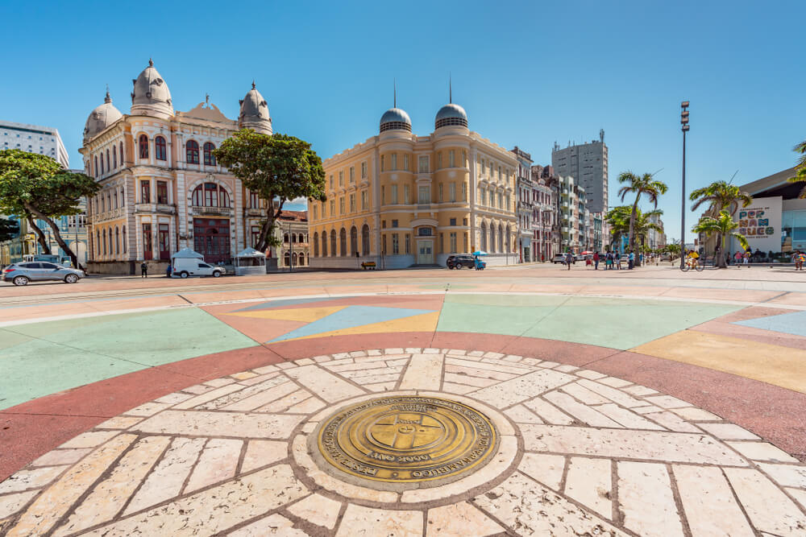

Ponto Zero

A Praça do Marco Zero não é apenas o epicentro cultural de Recife, mas também o início de todos os caminhos de Pernambuco. Neste artigo, vamos te contar um pouco do que rola no local e nos arredores dessa região histórica e ao mesmo tempo contemporânea, por ser tão frequentada e amada pelos moradores da cidade.